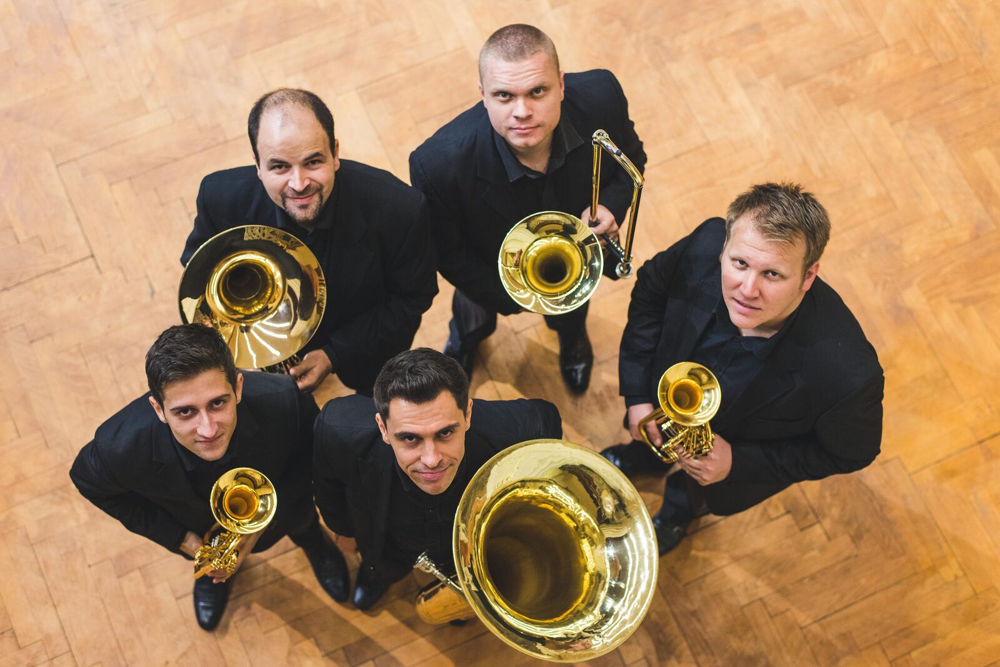

Prezentare formație artistică
Artiștii Filarmonicii de Stat Transilvania
Cvintet de suflători

Cvintet cameral înființat în 2015 din inițiativa unor membri ai Filarmonicii clujene, cu un repertoriu ce parcurge stiluri de la baroc la jazz. Membrii au concertat în numeroase transmisiuni radio-tv, festivaluri și turnee internaționale, colaborând și cu Orchestra Română de Tineret sau Orchestra Națională Simfonică a României.
2× Trompetă·Corn·Trombon·Tubă
Cvintet fix — 5 artiști
Gabriel Gyarmati & Iosif Sătmărean — trompetă · Gabriel Cupșa — corn · Leonard Neamț — trombon · Alexandru Corlan — tubă
Un traseu cronologic ce străbate mai multe stiluri muzicale — de la baroc la jazz — cu unele dintre cele mai îndrăgite arii de operă, transpuse în timbrul distinct al alămurilor. Programul poate fi adaptat specificului evenimentului dumneavoastră.